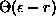
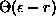
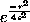
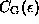
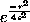
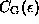
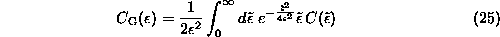
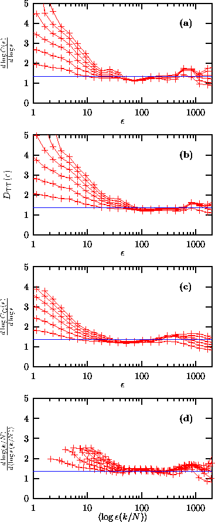

The correlation sum Eq.( ) can be regarded as an average density
of points where the local density is obtained by a kernel estimator with a step
kernel . A natural modification for small point sets is to
replace the sharp step kernel by a smooth kernel function of bandwidth
) can be regarded as an average density
of points where the local density is obtained by a kernel estimator with a step
kernel . A natural modification for small point sets is to
replace the sharp step kernel by a smooth kernel function of bandwidth
 . A particularly attractive case that has been studied in the
literature [80] is given by the Gaussian kernel, that is,
is replaced by . The
resulting Gaussian kernel correlation sum 
has the same scaling properties as the usual
. A particularly attractive case that has been studied in the
literature [80] is given by the Gaussian kernel, that is,
is replaced by . The
resulting Gaussian kernel correlation sum 
has the same scaling properties as the usual  . It has been
observed in [3] that can be
obtained from
. It has been
observed in [3] that can be
obtained from  via
via

without having to repeat the whole computation. If  is given
at discrete values of
is given
at discrete values of  , the integrals in Eq.(
, the integrals in Eq.( ) can be
carried out numerically by interpolating
) can be
carried out numerically by interpolating  with pure power laws
. This is done in
c2g which uses a 15 point Gauss-Kronrod rule for the numerical integration.
with pure power laws
. This is done in
c2g which uses a 15 point Gauss-Kronrod rule for the numerical integration.

Figure: Dimension estimation for the (noise filtered) NMR laser data. Embedding dimensions 2 to 7 are shown. From above: (a) slopes are determined by straight line fits to the log-log plot of the correlation sum, Eq. (). (b) Takes-Theiler estimator of the same slope. (c) Slopes are obtained by straight line fits to the Gaussian kernel correlation sum, Eq.(